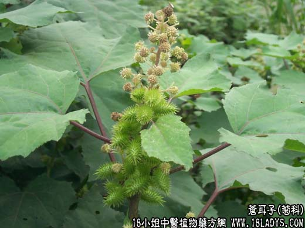

【中药概述】
苍耳子为菊科草本植物苍耳的成熟带总苞的果实。辛、苦、温。有小毒。归肺经。
1．祛风通窍：用于风寒表证，鼻塞流涕及鼻渊之浊涕长流、不闻香臭、头痛鼻塞等病证，常与辛夷，白芷等配伍，如（<济生方>苍耳散）。
2．祛风湿、止痛：用于风温痹痛，四肢拘挛等证。能内通筋骨，外达肌肤。风寒湿痹，可配羌活，防风，威灵仙等同用；风湿热痹，可配秦艽，黄连，海风藤等。
3．用于皮肤痒疹，有祛风止痒的作用，常与白蒺藜等配合应用。
【药效鉴别】
苍耳子为治鼻渊头痛的要药。又能祛风湿、止痛，治风湿痹痛。
【临证应用】
慢性鼻炎：用苍耳子油（苍耳子30～40粒，捶破加30g麻油文火煮炸，去苍耳取油）滴鼻。
【药理作用】
1.抑菌作用，煎剂在体外对金黄色葡萄球菌有抑制作用；
2.用于治疗腮腺炎，牙痛等。
【化学成分】
含苍耳甙、苍耳醇、氢醌等。
【用量用法】
6——20g，水煎服。
【使用注意】
久用有耗伤阴血之弊，故体虚者不宜。
【附】
炒苍耳子：辛，温。归肺、肝经。炒后以祛湿止痛作用显著，多用于治风湿痹痛，四肢拘挛等。
如果您想了解更多关于苍耳子，为您推荐一下内容↓↓↓↓